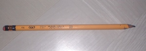

lapis2 
/lapis/
n.
“pencil”
n.
a pencil
Wrd.Gloss: pencil
Ka lapis iyan ka ngaran te igsulat ne impatalu diyè kayu ne mewumel wey egkaayun ne eglidusan. Due deisek ne malibusen diyè te elat ne iyan iya ka egpakasulat. Egkaayun degma ne eg-irisen ka igpakasulat e.
Layun dè egkalaag ka lapis enni Tuntun wey Ilay su egtakawen kun te duma ran.
Tuntun and Ilay always lost their pencil because their classmates stolen it.
Tagse maselem ne eg-insaan ded ni Meri si Tuntun ke hendeid e ka lapis din.
Every morning Meri asks Tuntun where is his pencil.
Egkeupul buwad perem si Peyì te layun dè egkalaag ka lapis ni Ilay.
Peyi almost gets frustrated because Ilay’s pencil gets lost all the time.
Eng. pencil; marker
Tag. lapis
Ceb. lapis
Online dict status: -
Usage level: L
Updated by: RJH,TME
Last updated: 13/Oct/2009
This page last updated: 28-Dec-2019
Copyright © 2009-2014, Matigsalug Language Christian Association, Inc